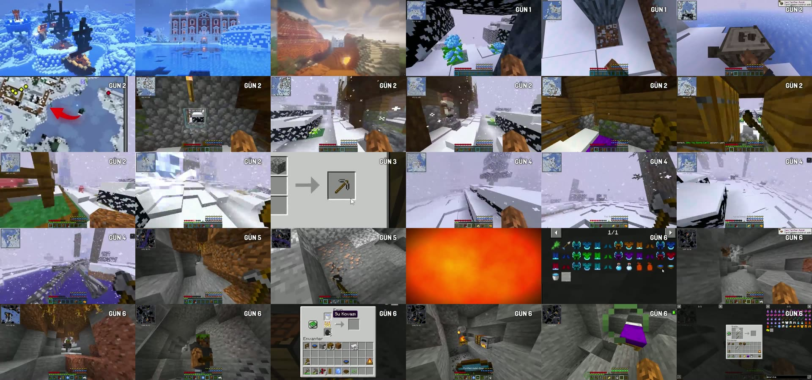
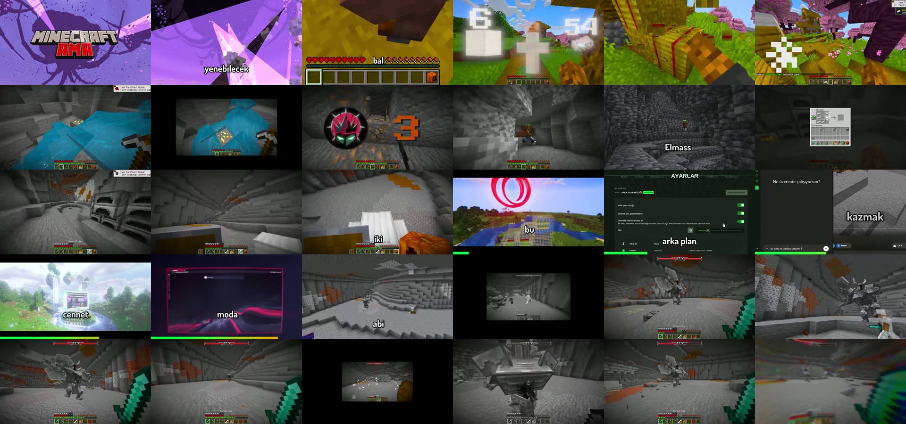
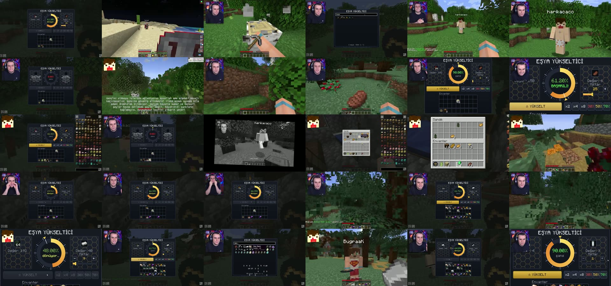
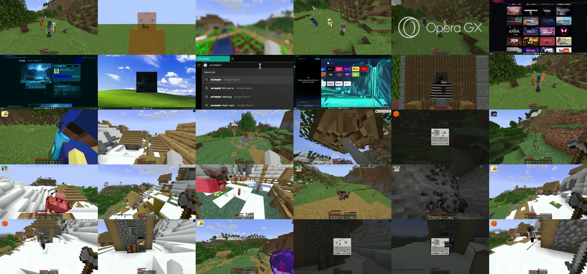
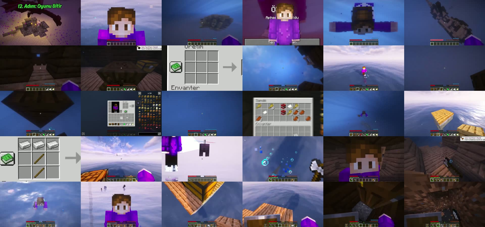
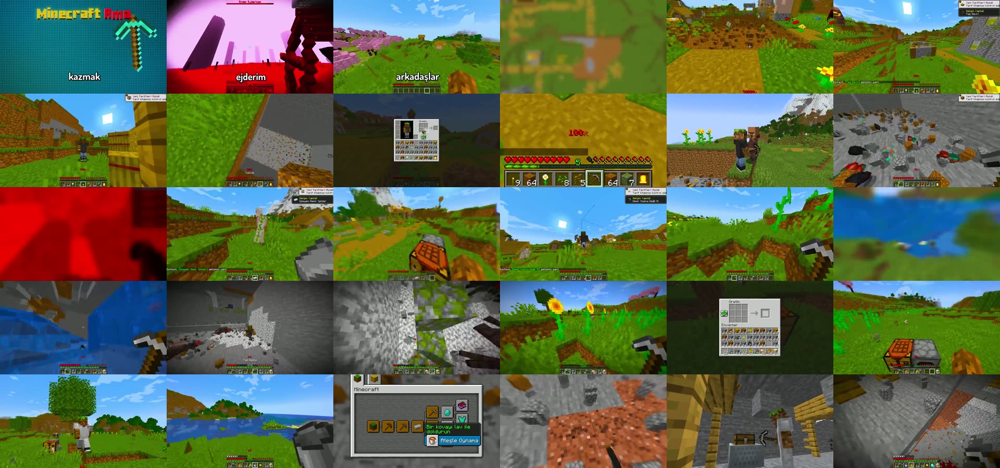
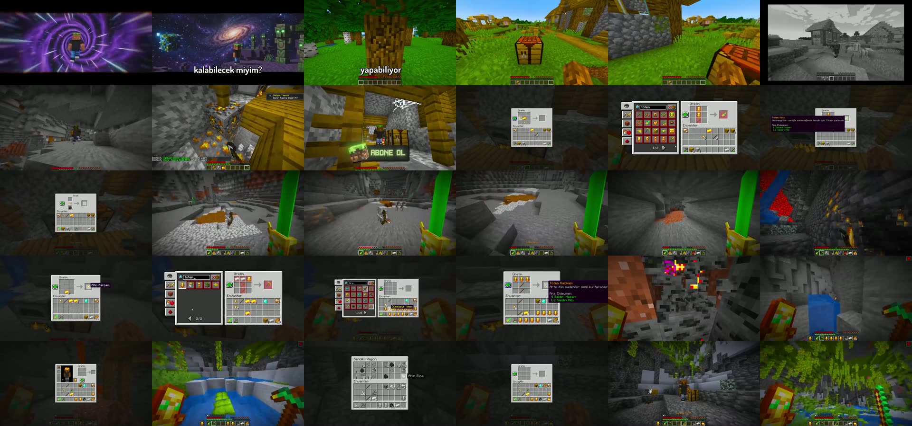
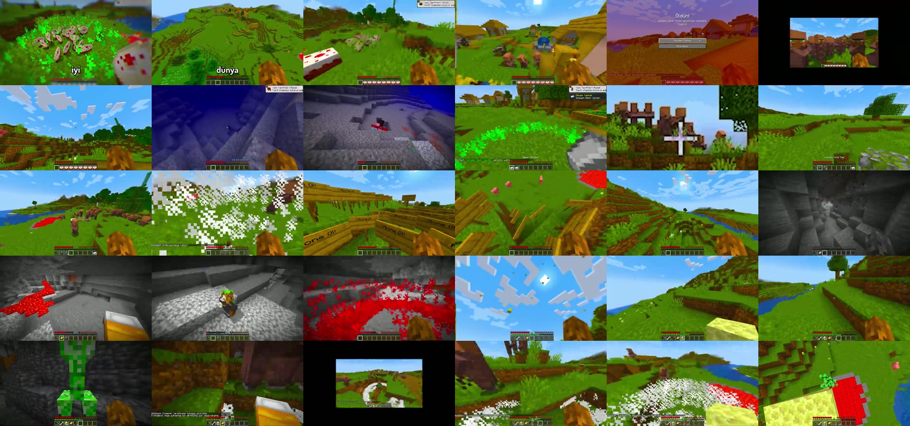

Bölüm 1'de ilk 90 saniyeyi açtık. Burada aynı 30 videonun ilk 5 dakikasını inceledim: her 10 saniyede bir kare (videoda 30 kare), dakika dakika kesim sayısı ve her videoda neyin tekrar ettiği. Amaç, izleyiciyi 90. saniyeden sonra da ekranda tutan yapıyı bulmak.
Linkler: ▶ 0:00 rozetleri YouTube'da o videonun o anına açılır. Isı haritasında video adı videoyu, sayı hücresi o dakikanın başını açar. Zamanlar kare örneklemesinden hesaplandı ve çoğu kontrol edildi, ±3 saniye kayabilir.
Sınır: Ses incelenmedi, sessizlik ölçümü sonuç vermedi. Müzik, ses efekti ve konuşma enerjisi hakkında bir şey söyleyemem. Kesim sayısı kamera hareketini de sayar. Altyazı, izlenme ve yorum yok, bu yüzden "hangisi daha çok izlendi" kıyası yapılamıyor. Sayıların kesinliği "yaklaşık" düzeyinde.
30 videonun ortalaması dakikada yaklaşık 19 görüntü değişimi. İlk dakika en hızlı (23), sonra 18–19 civarında düz bir çizgi. Yani açılıştaki hız bir "giriş efekti" değil, videonun genel ritmi.
| Video | 0–1 | 1–2 | 2–3 | 3–4 | 4–5 |
|---|
Aphernix'in PvP videosu (4. satır: 3, 19, 7, 3, 2) ▶ 0:00 ve boss dövüşü olan video (son dakikada 4) ▶ 3:25 uzun, kesilmeyen planlarla ilerliyor. Çatışmanın kendisi izleyiciyi tutuyor, kesim gerekmiyor.
"Özel aletler var!" ▶ 0:00 dakikada 52–70 değişim, "En kötü seed" ▶ 0:00 32–51. Burada renkli efekt, flaş ve sürekli ekran değişimi var. Bu seviye herkes için uygun değil, ama "enerji" için en kolay yol.
Tarif ekranı, çıkarma, geçiş ve yeni yer kombinasyonu. Bu aralık, modpack videosu için başlangıç hedefi olarak mantıklı.
Karelere bakınca videoların büyük kısmı kendini tekrar eden bir döngüyle ilerliyor. Her tur yaklaşık 40–60 saniye sürüyor.
En az 5 videoda ilk 5 dakikada ölüm ekranı var: Aphernix PvP ▶ 2:05, Büyüleri giyebiliyorum ▶ 3:45, Her eşya sonsuz ▶ 4:05, Her ölüm bir ödül ▶ 0:45, Her şey çok şanslı ▶ 0:55. Ölüm mesajı komik ("… tarafından katledildi"). Hardcore olmayan videolarda bu, hem gerginlik hem espri veriyor.
Hotbar üstünde artan bir sayı (kazılan blok) ▶ 0:05, ekrana yapışan büyük sarı sayı ▶ 0:25, "GÜN 1 → GÜN 6" ▶ 0:35 ▶ 3:35, "+1 Galibiyet" ▶ 0:35. İzleyici ilerlemeyi sayıdan görüyor ve neyin arttığını bekliyor.
"CÜCELER KÖYÜ" ▶ 2:55, "3. Adım: Platform Yap" ve "12. Adım: Oyunu Bitir" ▶ 0:05 gibi başlıklar videoyu böler. Aphernix'in su dünyası videosunda 12 adımlık bir yapı var ve ilk karede son adım gösteriliyor.
Ekranın ortasında küçültülmüş, grili oyun görüntüsü. Hatırlatma, geri dönüş veya şaka anı için kullanılıyor. Videoda 2–4 kez çıkıyor. Örnek: ▶ 0:55.
Hız yarışı videosunda sponsor, oyun başladıktan kısa süre sonra geliyor. Başlangıcı ▶ 0:45. Şaka ile bağlanıyor: ekranda "sa beyler napi" yazılıyor ▶ 1:25, sonra tarayıcının arka planı gösteriliyor. Tanıtım oyuncuların konuşmasının devamı gibi akıyor.
Boss videosunda sponsor daha geç ve daha uzun ▶ 2:35: ayarlar ekranı, "arka plan müziği" gösterimi, sonra kazma ve boss dövüşüne dönüş ▶ 3:25. Bölüm bitince çatışma başlıyor, yani izleyiciyi bekleten bir sonraki ödül var.
Totem videosunda açılışta abone kartı yok. Yeşil "ABONE OL" grafiği 1:25 civarında ▶ 1:25, ilk eşya yapımından sonra geliyor. Çağrıyı açılışa sıkıştırmak şart değil.
"İçerik çalıyorum" videosu 0:15'te "Bu Video Parodi Amaçlıdır!" kartı koyuyor ▶ 0:15. Kendi başına bir şaka ve bir güvenlik önlemi.
Her sayfa 30 kare: soldan sağa, yukarıdan aşağı, 10 saniyede bir. Yani sağ alt kare 4:50.








| Süre | Ne olmalı | Edit |
|---|---|---|
| 1:30–2:30 | İlk tam döngü: hedef, tarif/eşya, ilk güçlü deneme. İlk gerçek "oha" burada. | Eşya açıklamasını (mor kutu) 2 saniye yakın tut, sonra denemeye kes. |
| 2:30–3:30 | İlk risk: güçlü mob, ölüm ekranı veya yanlış deneme. Komik bir ölüm mesajı veya başarısızlık. | Ölüm ekranını kes, gülmeyi veya sessizliği bırak. Uzatma. |
| 3:30–4:00 | (Sponsor varsa) kısa, şakayla bağlı bölüm. Yoksa ikinci abone kartı. | Sponsorluğu ilk mini-zirveden sonra koy, açılışa değil. |
| 4:00–5:00 | Yeni hedef veya yeni mekanik: ilk yan bölge, köy, mağara, boss işareti. | Bölüm kartı ("2. Adım: ...") veya sayaç göster. Sayı artıyorsa göster. |